Care Compass: Admin guide
This guide is for the manager of a care organisation. It shows you, step by step, how to add carers, roster their shifts, look after your clients and keep your organisation's details up to date. Take it one step at a time. You cannot break anything by looking around.
The pictures use made-up example people. Priya Iyer is the manager at Banksia Home Care.
Web address: the Care Compass team gives you the address of your website when it is set up. Write it down and keep it somewhere safe.
Words used in this guide
| Word | What it means |
|---|---|
| Admin | A manager account. You're an admin. |
| Staff | Your carers: nurses and support workers. |
| Client | A person your organisation cares for. |
| Shift | A block of time when a carer is rostered with a client. |
| Task | A care item a carer must tick off once it's done. |
| Sign-in code | The 6-digit number from the authenticator app on your phone. |
1. Getting started
Register your organisation
- Go to the web address and click Create an account.
- Under Account type, click Organisation.
- Fill in your name, the Organisation name, your email and a password.
- Click Create an account.
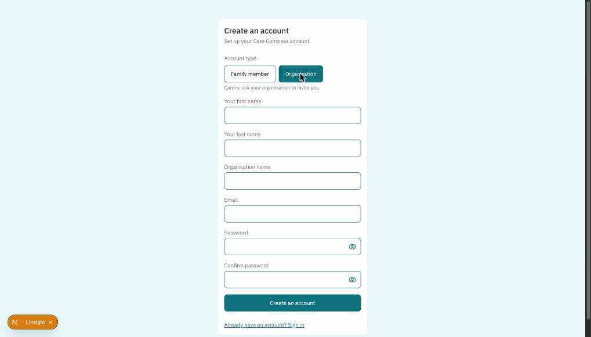
Set up your sign-in code
Admin accounts can see information about every client, so they need a second check at sign-in: a 6-digit code from an app on your phone. Care Compass asks you to set this up straight after you register.
The separate Admin Sign-in Code Guide walks you through it step by step with Google Authenticator.
Signing in next time
- Enter your email and password and click Sign in.
- Open the authenticator app on your phone and type the 6-digit code for Care Compass.
- Click Verify.

2. Finding your way around
The menu down the left side of the screen has five pages:
- Home: an overview of today
- Manage: roster and cancel shifts
- Staff: add, edit and remove carers
- Clients: the people your organisation cares for
- Settings: your organisation's details
To sign out, click the arrow icon in the top right corner.
3. Home
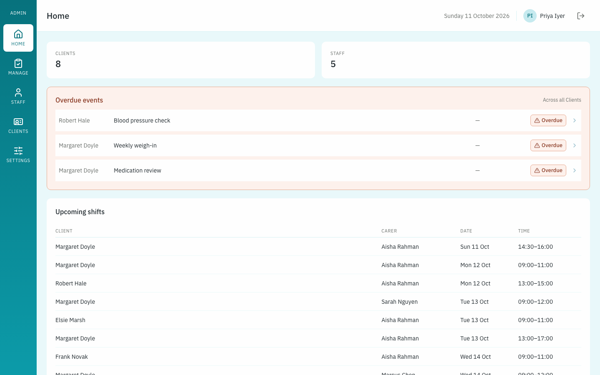
- Clients and Staff show how many of each you have.
- Overdue events lists tasks that carers haven't ticked off yet, across all of your clients.
- Upcoming shifts lists the next shifts, with the client, carer, date and time.
4. Staff
Adding a carer
- Click Staff in the left menu.
- Click Add Staff.
- Fill in their first name, last name, phone and email.
- Choose their Role: Registered Nurse, Enrolled Nurse or Support Worker.
- Click Save.
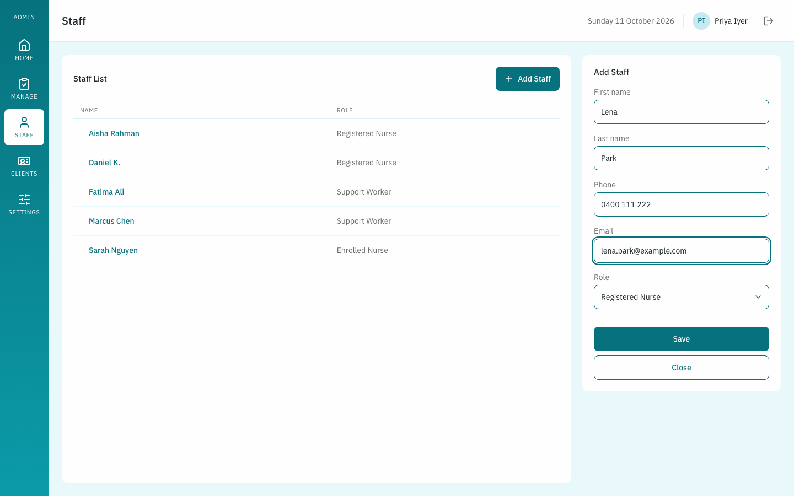
Care Compass emails the carer an invite to set their password. Until they do, their name shows a Pending tag. If they can't find the email, click their name and then Resend invite.
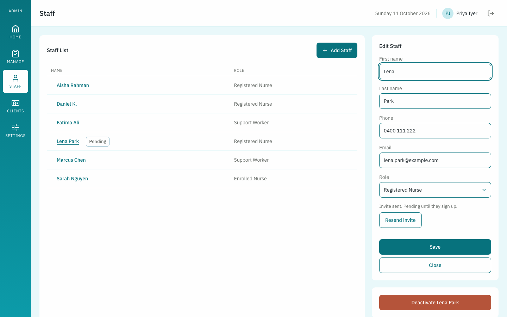
Changing a carer's details
Click the carer's name in the Staff List. Change what you need on the right and click Save.
Seeing and removing a carer's clients
When you click a carer's name, the Clients for box lists every client they have shifts with, and their next shift with each one.
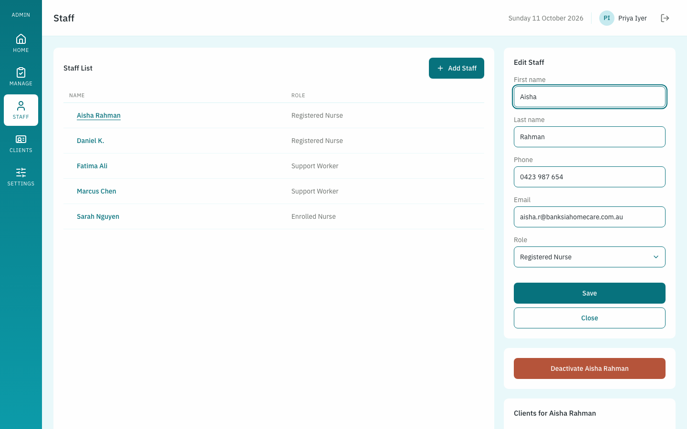
Click Remove beside a client to take the carer off that client. Their future shifts together are cancelled, and any shift happening right now ends. Finished shifts stay in the records.
When a carer leaves
Click their name, then the red Deactivate button, and confirm. They lose access straight away. Their future shifts are cancelled and any shift in progress ends. Their records are kept, and they move to a separate list called Inactive staff.
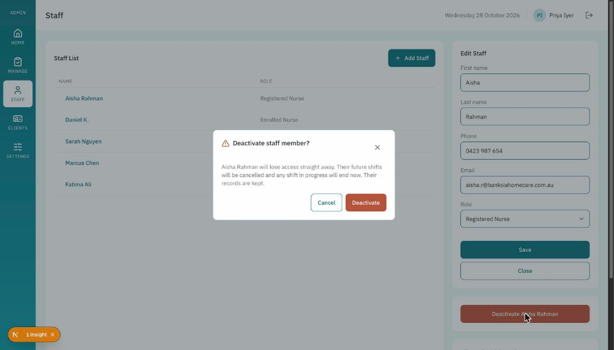
5. Rostering shifts (Manage)
Carers can only see a client while they have a shift with them, so this is how you give a carer access to a client.
- Click Manage in the left menu.
- Click a staff member in the Staff list and a client in the Clients list. You can type in the search boxes to find them quickly.
- Pick the Date on the calendar. Days that already have shifts have a small dot underneath.
- Set the start and end time with the drop-down boxes, or click one of the Common shifts, such as 09:00 - 17:00.
- Check Current shifts on selected day, which shows what the carer and the client already have booked that day.
- Click Assign shift.
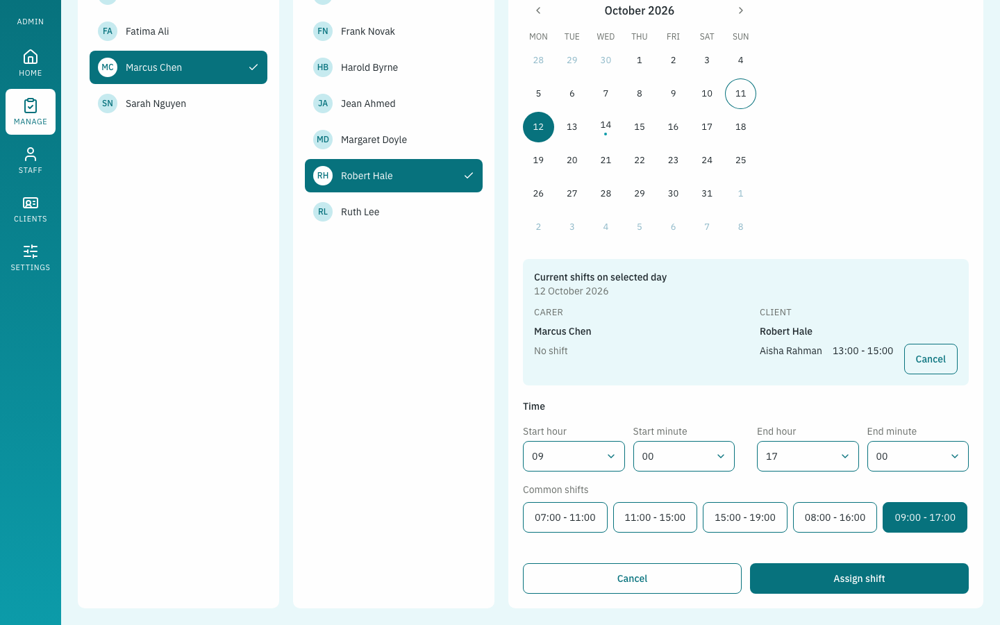
A message confirms the shift, and the carer gets a notification in Care Compass.
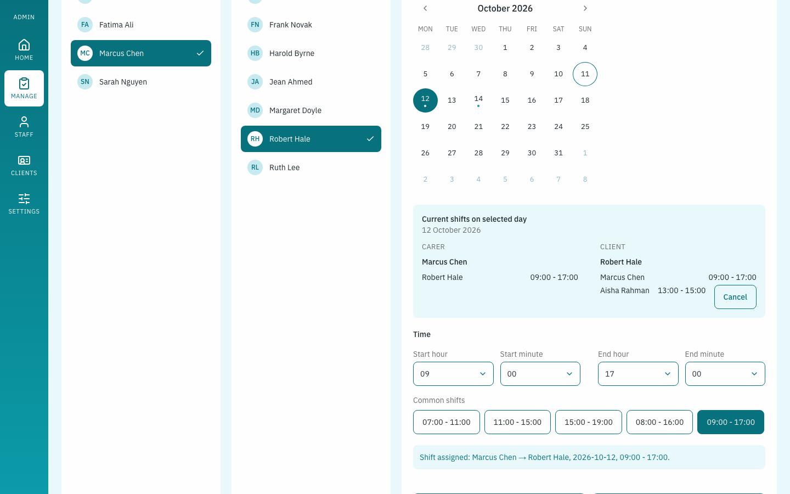
Double bookings
If the carer already has a shift at that time, a warning lists the clashes. You can still assign the shift if you mean to.
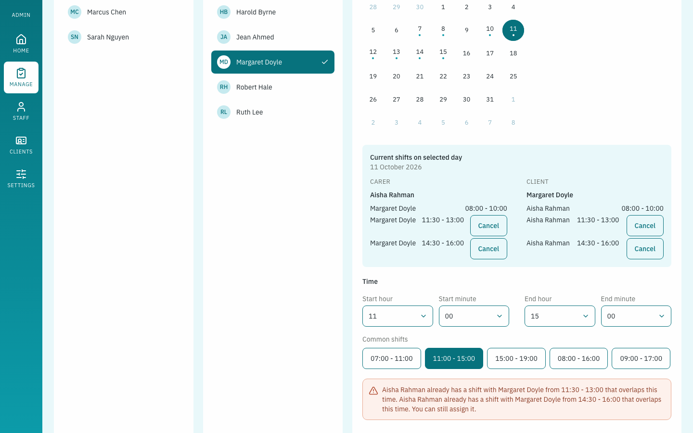
Cancelling or changing a shift
Pick the carer or client and the date. In Current shifts on selected day, click Cancel beside the shift, then Cancel shift to confirm. The carer is notified.
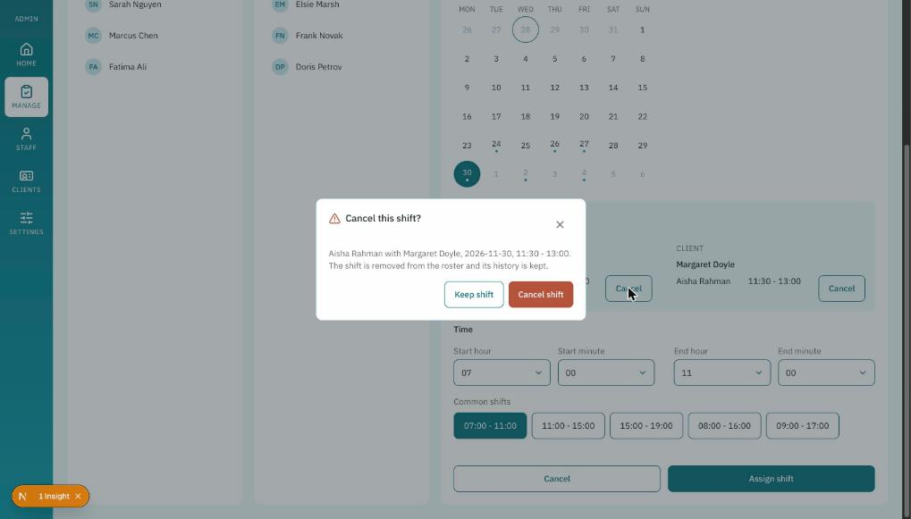
Shifts can't be edited. To change the time, cancel the shift and assign a new one.
6. Clients
Families add their own person to Care Compass and then choose your organisation. The client appears in your Client List as soon as they do. You don't add clients yourself.
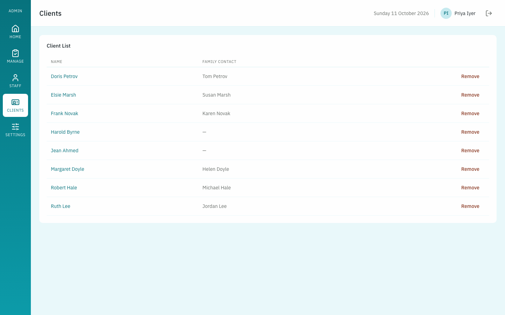
Viewing a client
Click a client's name to see their pages. The tabs are Home, Client Details, Calendar, Budget and Care log, the same pages the family sees.
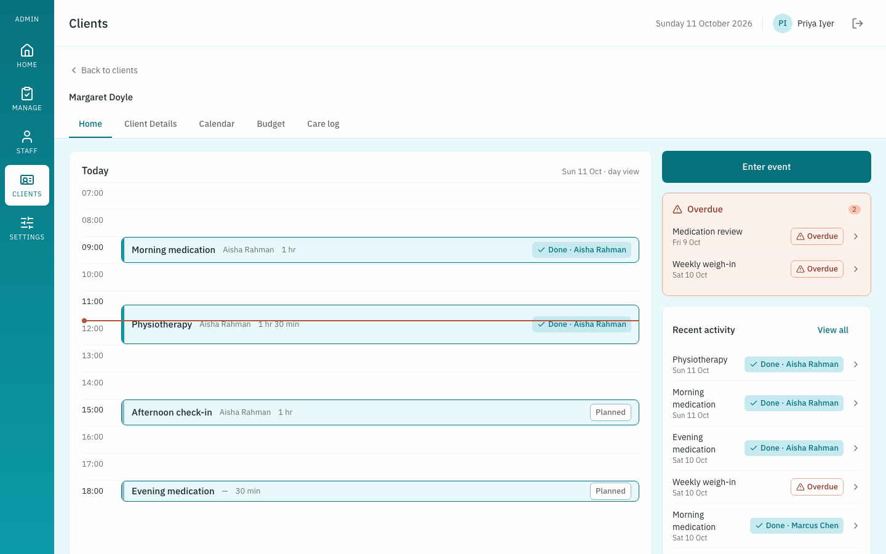
You can add events with Enter event and update the budget with Edit. Only the carer on shift can tick off a task.
Removing a client
Click Remove beside the client and then Yes, remove. Your staff lose access to that client. The family keeps all of their records and is asked to choose a new organisation.
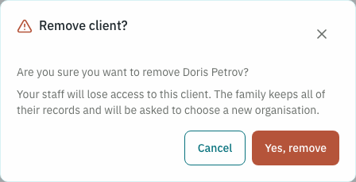
7. Emails you'll receive
Care Compass emails you and the client's family when:
- one of a client's money buckets reaches 75%, 85% and 100% of this month's money
- a cost is pending because its bucket ran short
- a task is still not ticked off at least 30 minutes after it was due
The email subject starts with "Schedule of Care Program".
8. Settings
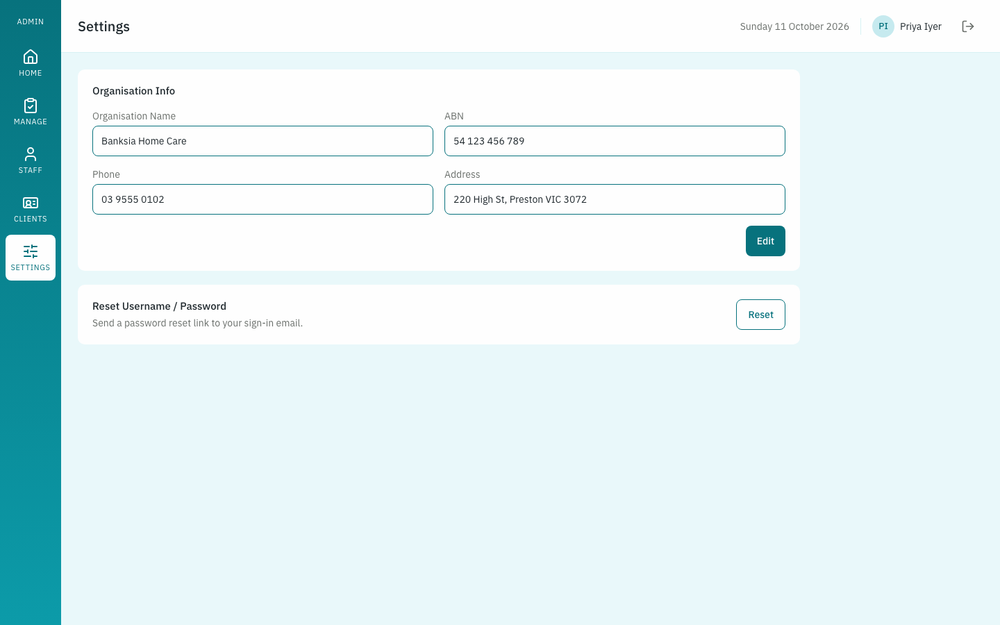
- Organisation Info: click Edit to change your organisation's name, ABN, phone or address.
- Reset Username / Password: click Reset and Care Compass emails you a link to set a new password.
Questions people often ask
| Question | Answer |
|---|---|
| A carer says the invite email never arrived. | Ask them to check their spam folder. If it is not there, click their name in Staff, then Resend invite. |
| Can I change the time of a shift? | No. Cancel the shift and assign a new one (section 5). |
| Why can I not see a client I expected? | Clients are added by their family, who then choose your organisation. Ask the family to open Settings and choose your organisation (Family guide, section 1). |
| A carer cannot tick off a task. | Carers can only tick off a task while their shift with that client is happening. Check the shift on the Manage page. |
| A carer has left. What do I do? | Deactivate them (section 4). Their records are kept. |
| I forgot my password. | On the sign-in page click Forgot password? and follow the email. |
If you lose your phone
Without the authenticator app you can't sign in. See "Lost or replaced phone" in the Admin Sign-in Code Guide.